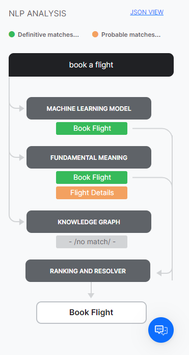
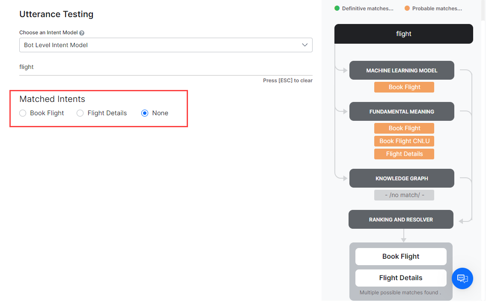
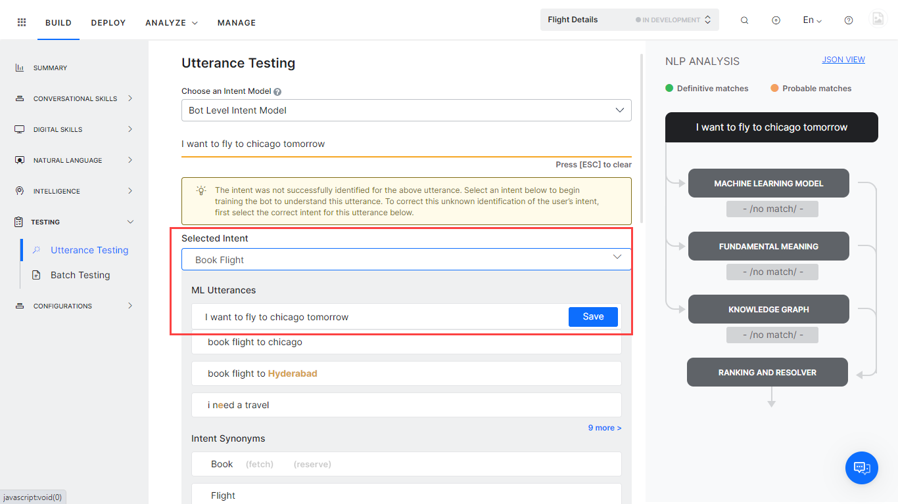
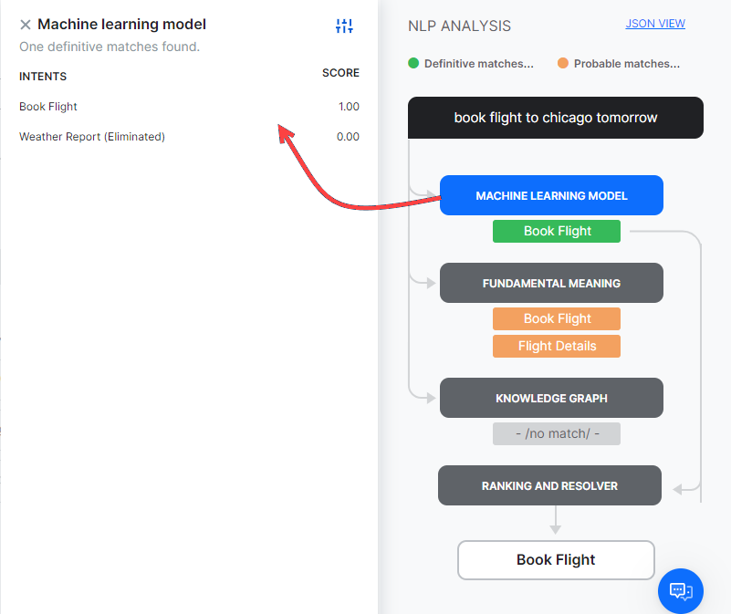
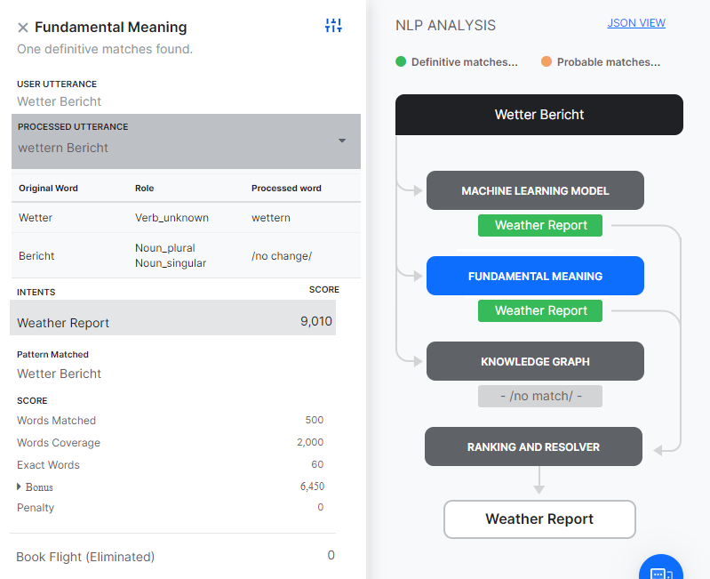
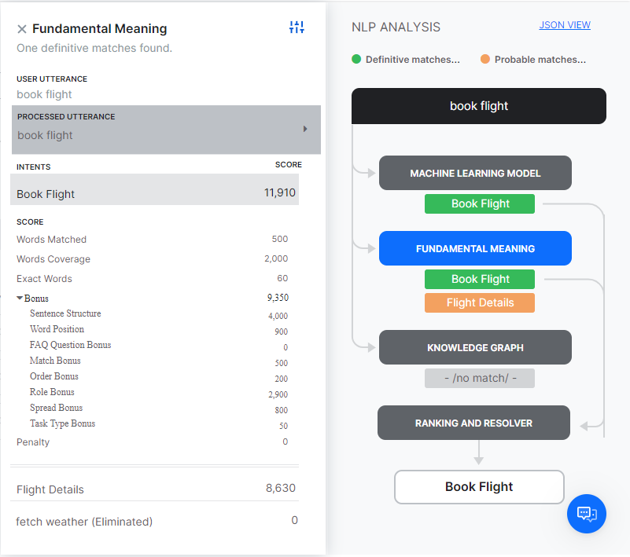
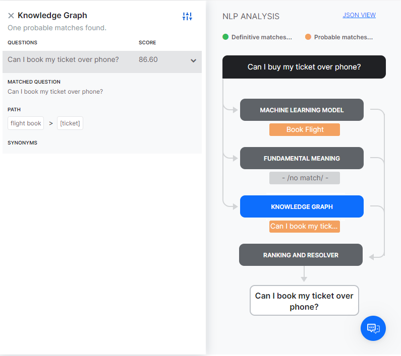
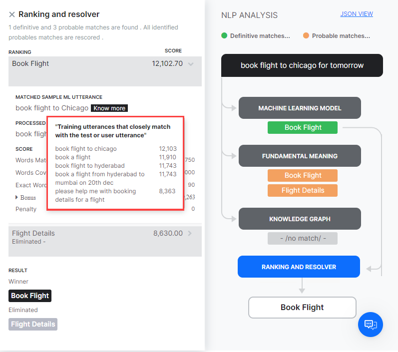
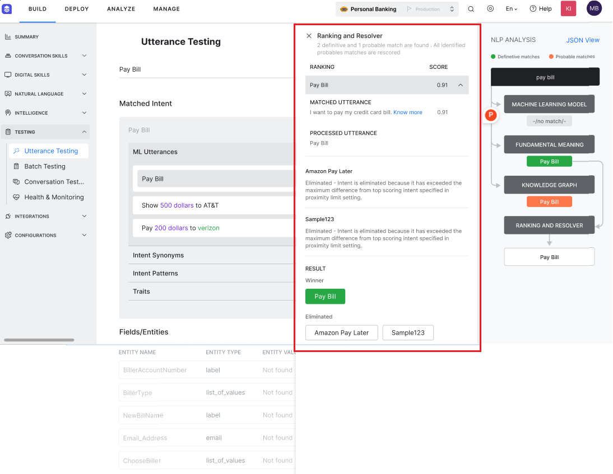
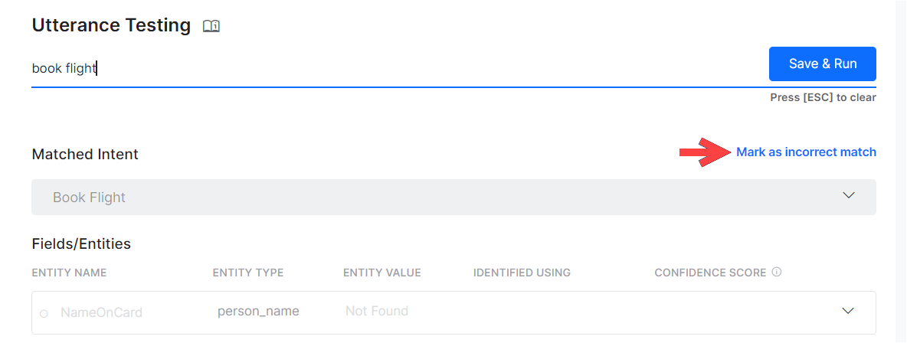

Utterance Testing¶
To make sure your assistant responds to user utterances with related tasks, it is important that you test it with a variety of user inputs. Evaluating a VA with a large sample of expected user inputs not only provides insights into its responses but also gives you a great opportunity to train it in interpreting diverse human expressions.
You can perform all the training-related activities for a VA from the Utterance Testing module. We will use a sample Travel Planning assistant to provide examples within this article.
Testing the Assistant¶
Simply put, testing a VA refers to checking if it can respond to a user utterance with the most relevant task. Given the flexibility of language, users will use a wide range of phrases to express the same intent.
For example, you can rephrase I want to change my ticket from San Francisco to Los Angeles on Jan 1 as Please change my travel date. Can’t make it on Jan 1. The trick is to train the assistant to map both of these utterances with the same intent.
The first step to start testing a VA is to identify a representative sample of user utterances to test the responses. Look for sources of data that reflect real-world usage of the language, such as support chat logs, online communities, FAQ pages of relevant portals.
How to test the assistant¶
Follow these steps to test your assistant:
- Open the assistant that you want to test.
- Select the Build tab from the top menu.
- From the left menu click Testing -> Utterance Testing.
- In the case of a multiple intent model, you can select the Intent Model against which you want to test the utterance. The ML Engine will detect the intents only from the selected model.
- In the Type a user utterance field, enter the utterance that you want to test. Example: Book a flight.
- The result appears with a single, multiple, or no matching intents
{kind=link}
Types of Test Results¶
When you test an utterance, the NLP engine tries to identify an intent using the following engines and intent identification features:
- Machine Learning engine,
- Fundamental Meaning engine,
- Knowledge AI, including the Knowledge Graph engine and the Answer from Documents feature,
- Ranking and Resolver.
Note
Utterance testing differs for Knowledge AI and Ranking and Resolver, depending on the NLP version, Ranking and Resolver version, and whether you are using the Few-Shot Knowledge Graph model.
Utterance Match Classification¶
Test results are classified as either Probable Matches or Definitive Matches, as follows;

{kind=link}
Definitive Matches get high confidence scores and are assumed to be perfect matches for the user utterance. In published assistants, if user input matches with a single Definitive Match, the VA directly executes the task. If the utterances match with multiple Definitive Matches, they are sent as options for the end-user to choose one.
On the other hand, Probable Matches are intents that score reasonably well against the user input but do not inspire enough confidence to be termed as exact matches. Internally the system further classifies possible matches into good and unsure matches based on their scores. If the end-user utterances were generating possible matches in a published VA, the assistant sends these matches as “Did you mean?” suggestions for the end-user.
Below are the possible outcomes of a user utterance test:
- Single Match (Possible or Definitive): The NLP engine finds a match for the user utterance with a single intent or task. The intent is displayed below the User Utterance field. If it is a correct match, you can move on to test the next utterance or you can also further train the task to improve its score. If it is an incorrect match, you can mark it as incorrect and select the appropriate intent.
-
Multiple Matches (Possible or Definitive or Both): NLP engine identifies multiple intents that match with the user utterance. From the results, select the radio button for the matching task and train it.
 -
Unidentified Intent: The user input did not match any task in any of the linked assistants. Select an intent and train it to match the user utterance.

{kind=link}
{kind=link}
Entity Match¶
During testing of the VA, the matched entities are displayed. The entities from the utterance are processed in the following order:
- first NER and pattern entities
- then the remaining entities.
Post v. 8.0 of the XO Platform, the details of how the entity is matched, and with what confidence scores are also displayed. The details include:
- Identification Engine – Machine Learning, Fundamental Meaning or Knowledge Graph;
- Training Type – match can be from NER, pattern training, entity name, system concept, etc.. In case of pattern match, click the row to get the details for the same;
- Confidence Score identified by the ML engine using NER training (only when Conditional Random Field is selected as the NER model)
{kind=link}
Analyzing the Test Results¶
When you test a user utterance, in addition to the matching intents you will also see an NLP Analysis box that provides a quick overview of the shortlisted intents, the NLP models using which they were shortlisted, corresponding scores, and the final winner.
{kind=link}
Under the Fundamental Meaning tab, you can see the scores of all the intents even if they aren’t shortlisted.
As mentioned above, the Kore.ai NLP engine uses Machine Learning, Fundamental Meaning, and Knowledge Graph (if any) models to match intents. If the NLP engine finds a single Definitive Match through one of the underlying models, you will see the task as the matching intent. If the test identifies more than one definitive match, you will receive them as options to pick the right intent.
If the models shortlist more than one possible match, all the shortlisted intents are re-scored by the Ranking and Resolver using the Fundamental Meaning model to determine the final winner.
Sometimes, multiple Possible Matches secure the same score even after the rescoring in which case they are presented as multiple matches to the developer to select one. You can click the tab with the name of the learning model in the NLP Analysis box to view the intent scores.
Note
The NLP score is an absolute value and can only be used to compare against other tasks with the same input. Task scores cannot be compared across different utterances.
{kind=link}
From each model dialog, clicking the icon on the top right will display the configurations and thresholds in place for the corresponding engines.
ML Model¶
The ML model tries to match the user input with the task label and the training utterances of each task. If the user input consists of multiple sentences, each sentence is run separately against the task name as well as the task utterances.
Click on the Machine Learning Model button to open the Machine Learning Model section of NLP Analysis. This shows only the names of the tasks that secure a positive score. In general, the more the number of training utterances that you add to a task, the greater are its chances for discovery. For more information, read Machine Learning.

{kind=link}
FM Model¶
Apart from the ML model, each task in the VA is also scored against the user input using a comprehensive custom NLP algorithm that involves different combinations of task names, synonyms, and patterns. The Fundamental Meaning (FM) Model tab shows the analysis for all the intents in the VA. Click the tab to view the scores of each task. Clicking the Processed Utterance shows how the user utterance was analyzed and processed.
FM Scoring Model¶
From v. 7.2, the FM engine generates the model in two ways, depending upon the language of the VA.
Approach 1: Supported for German and French languages.
The word analysis factors pertaining to Original Word, Universal Parts of Speech, Dependency Relation and Related Word are elaborated.
Next, the score breakup for each of the intents processed is displayed. Selecting a scored intent (matched or eliminated) displays the details of the scoring for each word. This includes the words from the utterance and score assigned to each based upon the dependency parsing.

{kind=link}
Approach 2: Supported for languages, other than the ones mentioned above.
The word analysis factors pertaining to Original Word, Role in the sentence and Processed word (in case of spell correction) are elaborated.
Next, the score breakup for each of the intents processed is displayed. Selecting a scored intent (matched or eliminated) displays the details of the scoring for each word. The detailed breakdown is given below.

{kind=link}
The other scoring methods are:
- Words Matched: The score given for the number of words in the user input that matched words in the task name or a trained utterance for the task.
- Word Coverage: The score given for the ratio of the words matched with that of the overall words in the task, including task name, field names, utterances, and synonyms.
- Exact Words: The score given for the number of words that matched exactly and not by synonyms.
- Bonus
- Sentence Structure: Bonus for the sentence structure match to the user input.
- Word Position: Score given to a word based on its position in a sentence Individual words towards the start of the sentence are given higher preference. Extra credit if the word is near to the sentence start.
- Order Bonus: Bonus for the number of words in the same order as the task label.
- Role Bonus: Bonus for the number of primary and secondary roles (subject/verb/object) matched.
- Spread Bonus: Bonus for the difference between the position of first and last matched words in a pattern. The higher the difference, the greater the score.
- Penalty:
- Penalty if there are several phrases before the task name or if there is a conjunction in the middle of the task label.
Knowledge Graph¶
If the VA includes a Knowledge Graph, the user utterances are processed to extract the terms and are mapped with the Knowledge Graph to fetch the relevant paths. All the paths containing more than a preset threshold of the number of terms get shortlisted for further screening. Path with 100% terms covered and having a similar FAQ in the path is considered a perfect match.
In case the utterance triggers a dialog (as per run a dialog option in KG), the same is displayed as matched intent and matched utterance. You can further train the VA as you would for an intent from ML or FM engine. Know more about Knowledge Graph Training from here.

{kind=link}
Answer from Documents¶
If you have enabled Answer from Documents for your VA, and a match is found within your uploaded documents, you will see results for this match, provided the intent is not identified using any other method (a dialog task, a Knowledge Graph FAQ, the Machine Learning or the Fundamental Meaning engine).
When an utterance is answered from a document, you will see a note mentioning that no Intent was identified by the ML, FM, and KG engines. Click Add to KG to add an FAQ to the Knowledge Graph to address the utterance and improve intent identification.
When the Answer from Document feature is used in reply to a test utterance, the following information is provided:
- The document from which the answer has been retrieved;
- An option to view this document;
- The page where the answer has been identified;
- A similarity score between the tested utterance and the top-matched document;
- The content of the answer.
{kind=link}
Ranking and Resolver¶
Ranking and Resolver determines the final winner of the entire NLP computation. If either the ML model or the Knowledge Graph find a perfect match, the ranking and resolver doesn’t re-score the intent and presents it as a matched intent. Even if there are multiple perfect matches, they will be presented as options to the developers from which they can choose.
The Ranking and Resolver re-scores all the other good and unsure matches identified by the three models using the Fundamental Meaning model. After re-scoring, if the final score of an intent crosses a certain threshold, it too is considered as a match.
Selecting the Ranking and Resolver tab provides you with details on how the winning intent has been determined.
The ranking and details for each match can be viewed by selecting the matched utterance.

{kind=link}
RR Scoring Model¶
Depending upon the Bot language the scoring model can be:
- based on a mixture of word roles, sentence/word positions, and word order; or
- based on dependency parsing (supported for German and French languages)
The basis for intent elimination by Ranking & Resolver when the three engines return different definite/possible matches is as follows:
- Intents matched based upon entity values like date, number etc., by the Machine Learning Model are eliminated.
- All possible matches identified by any of the three engines are eliminated if a definitive match was found.
- Definitive match eliminated if another definitive match was found prior to this in the user utterance – case when the user utterance includes two intents. For example, “Book me a flight and then book a cab” would match “Book Flight” and “Book Cab” but “Book Cab” is eliminated over “Book Flight”.
- Intent pattern matches following a definitive intent match are eliminated. For example, user utterance “create a task to send an email” can match the intents “create task” and “send email”, in such cases the “send email” will be eliminated since it follows the intent “create task”
- Intents with scores below the minimum value set in the Threshold and Configurations section are eliminated.
- Definitive matches which match a Negative Pattern.
- Intents for which the pre-conditions, in case defined, are not met are eliminated.
- If the definitive match was from Knowledge Graph Engine by Search In Answer and there is another matched intent.
Ranking and Resolver v2¶
Version 2 of the Ranking and Resolver only ranks the scores of the definitive matches from ML and KG engines (not the FM engine) without intent rescoring to ensure the best intent identification accuracy. If you enable Ranking and Resolver Version 2, your test results adjust as follows:
The Ranking & Resolver window displays the following:
- The definitive intent that is matched based on ranking.
- The number of definitive and probable matches.
- The winning intent name and the ranking score.
- The other definitive intent(s), the reason for elimination, and the ranking score.
- The result, including the winning and eliminated intents.
{kind=link}
The NLP Analysis page within the NLP Insights dashboard displays the following:
- The given user utterance.
- The flow of how the NLP models generated the rescored matching intents.
- The flow of Version 2 of R&R, including the ranking, identification, and marking of the winning intent as the definitive match.
- The identification and marking of the probable match.
{kind=link}
Training the Assistant¶
Training is how you enhance the performance of the NLP engine to prioritize one task or user intent over another based on the user input. You should test and, if needed, train your assistant for all possible user utterances and inputs.
Utterance-based Training¶
Below is the process we recommend you use for utterance training:
- After you enter a User Utterance, depending on the test result do one of the following to open the training options:
- For an unmatched intent: From the Select an Intent drop-down list, select the intent that you want to match with the user utterance.
- For multiple matched intents: Select the radio button for the intent you want to match.
- For a single matched intent: Click the name of the matched intent.
- The user utterance that you entered gets displayed in the field under the ML Utterances section. To add the utterance to the intent, click Save. You can add as many utterances as you want, one after another. For more information, read Machine Learning.
- Under the Intent Synonyms section, each word in the task name appears as a separate line item. Enter the synonyms for the words to optimize the NLP interpreter accuracy to recognize the correct task. For more information, read Managing Synonyms.
- Under the Intent Patterns section, enter task patterns for the intent. For more information, read Managing Patterns.
- When you are done making the relevant training entries, click Re-Run Utterance to see if you have improved the intent to get a high confidence score.
{kind=link}
View Matched Training Data¶
The Ranker and Resolver NLP Analysis window lists the matched training data (ML utterances, intent synonyms, questions, patterns, and traits) that helped the ML, KG, or FM engine to identify the qualified intent during utterance testing. This crucial information is available in all the NLU languages of R&R V1 and V2, and helps understand why the given intent is qualified.
The system displays the matched training data for the following NLP engines and network models:
| NLP ENGINE | SUPPORTED NETWORK MODELS | MATCHED TRAINING DATA |
| Machine Learning | Standard and Few-shot Model. | Sample utterance for every intent qualified. |
| Knowledge Graph | Ontology and Few-shot Model. | Questions/alternate questions of the qualified FAQs. |
| Fundamental Meaning | All Models | Pattern for the qualified intents. |
For the intents qualified and eliminated in R&R, the system displays the elimination reason in addition to the matched utterance, processed utterance, and the winning intent.

{kind=link}
Train with FAQ
If you want the assistant to respond to user utterance with FAQs there are two ways to do it:
- set the terms, term configuration, or classes from the FAQ page, train the KG and retest the utterance.
- add the utterance as an alternate question to the selected FAQ from the Knowledge Graph page, train the KG and retest the utterance. Know more about Knowledge Graph Training.
Mark an Incorrect Match
When a user input matches an incorrect task, do the following to match it with the right intent:

{kind=link}